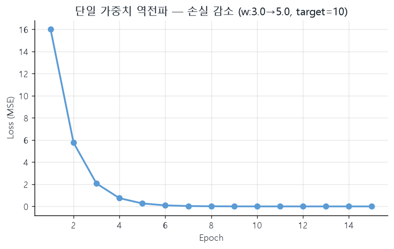
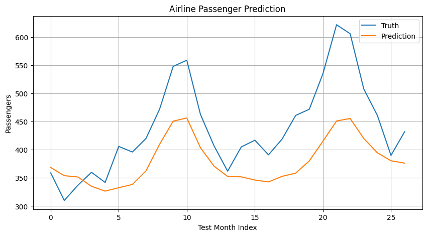
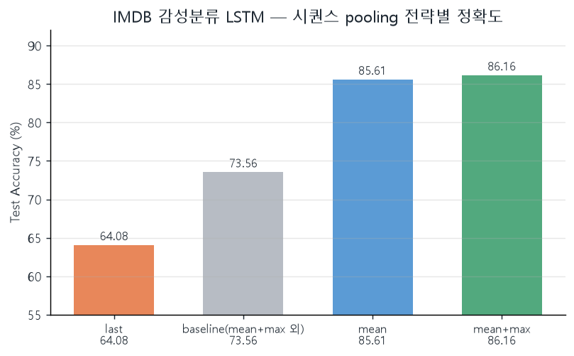
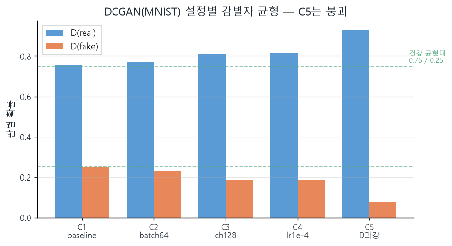
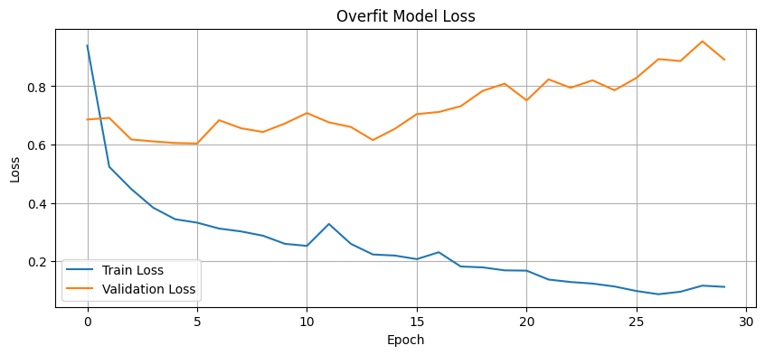
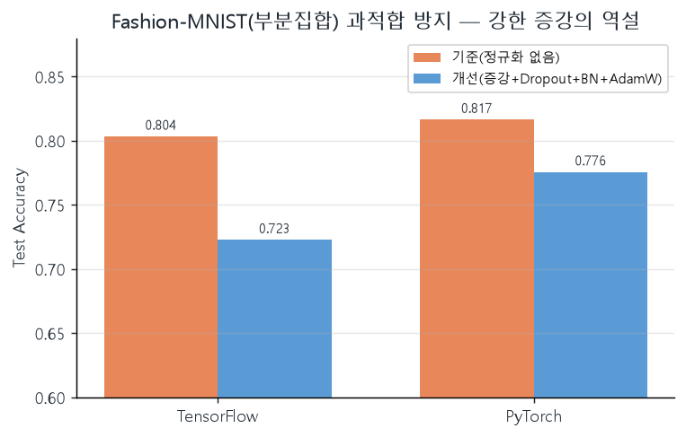
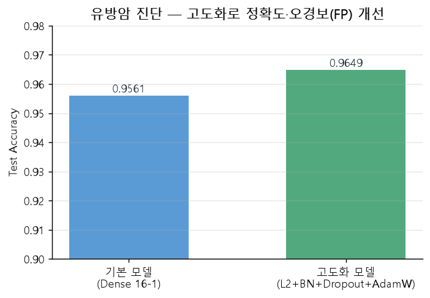
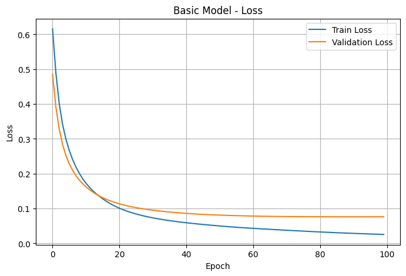

loss.backward() 한 줄이 알아서 가중치를 고쳐줬다.
그 한 줄 안에서 실제로 무슨 일이 일어나는지, 둘째 주는 거기서 시작했다. 그리고 학습이 된 뒤엔 늘 같은 질문이 남았다 —
"이 점수, 믿어도 되나?" 역전파의 안쪽을 들여다보고, 과적합·검증·고도화로 그 질문에 답해 본 한 주다.
CH 01역전파를 손으로 따라가다 — grad는 어디서 오는가#
학습
첫 주에 모델을 학습시킨 loss.backward()는 사실상 블랙박스였다. 0615에는 그 안을 열었다 —
입력 하나·가중치 하나짜리 가장 단순한 식부터 시작해, 손실이 가중치를 어떻게 끌고 가는지 숫자로 따라갔다.
의문 → 시행 ① grad는 정확히 무엇을 가리키나
x=2, 정답 target=10, 가중치 w=3으로 두면 예측은 x*w=6, 손실 (10-6)²=16이다.
여기서 loss.backward()를 부르고 w.grad를 찍어 봤다.
예측값: 6.0 정답값: 10.0 손실값: 16.0 w에 대한 기울기(w.grad): -16.0 수정 후 가중치 w: 3.1600000858306885 # w - lr(0.01) * grad
w ← w − lr·grad는 손실이 줄어드는 쪽으로 w를 정확히 그만큼 민다. 역전파는 결국 각 가중치에 대한 손실의 기울기를 구하는 일이었다.코드로 본 한 스텝 — backward()와 수동 갱신
옵티마이저 없이 손으로 한 스텝을 돌려, backward()가 채운 w.grad로 직접 가중치를 고쳐 봤다.
w = torch.tensor(3.0, requires_grad=True)
prediction = x * w # 순전파: 6.0
loss = (target - prediction) ** 2 # 손실: 16.0
loss.backward() # 역전파 → w.grad 채움 (-16.0)
with torch.no_grad():
w -= learning_rate * w.grad # 경사하강: w ← w - lr·grad
w.grad.zero_() # 기울기는 누적되므로 매 스텝 0으로 초기화의문 → 시행 ② 반복하면 정말 정답으로 수렴하나
같은 식을 학습률 0.05로 30번 반복했다. w가 3에서 출발해 목표값(예측이 10이 되는 w=5)으로 가는지 본다.
epoch=01, w=3.8000, prediction=6.0000, loss=16.0000 epoch=02, w=4.2800, prediction=7.6000, loss=5.7600 epoch=03, w=4.5680, prediction=8.5600, loss=2.0736 epoch=05, w=4.8445, prediction=9.4816, loss=0.2687 epoch=10, w=4.9879, prediction=9.9597, loss=0.0016 epoch=14, w=4.9984, prediction=9.9948, loss=0.0000 ← w→5.0 수렴

의문 → 시행 ③ 층을 쌓아도(XOR) 같은 원리로 풀리나
선형 회귀(y=2x+1)는 300에폭에 weight=1.984, bias=1.058로 정답에 붙었다.
비선형인 XOR은 단층으로는 못 푸는 고전 문제라, 은닉 8뉴런 MLP로 1000에폭 학습했다.
입력 [0,0] → 0.00116 (정답 0) 입력 [0,1] → 0.99999 (정답 1) 입력 [1,0] → 0.99999 (정답 1) 입력 [1,1] → 0.0000068 (정답 0)
torch.save로 가중치를 저장하고 다시 불러와 예측(10.0119)이 그대로 재현되는 것도 확인했다 —
학습 결과는 파일로 떼어내 재사용할 수 있는 상태(state_dict)다.의문 → 정리 ④ 저장한 모델을 다시 학습시키면, 그게 파인튜닝인가
저장·재로드를 해보니 자연스럽게 의문이 생겼다 — "불러온 모델을 새 데이터로 또 학습시키는 게 파인튜닝 아닌가?"
epochs를 생략하면 Keras 기본값이 1이라 4개 샘플을 단 한 번만 보고 끝낸 과소적합(underfit)이었다. 첫 주 내내 "과적합"만 경계했는데, 그 반대편 함정도 똑같이 점수를 망친다는 걸 처음 체감했다.CH 02시퀀스와 생성 — LSTM pooling과 GAN의 균형#
학습
0616엔 두 갈래를 다뤘다. 시계열·텍스트를 다루는 LSTM(airline 승객 예측, IMDB 감성분류)과, 데이터를 만들어내는 DCGAN(MNIST 숫자 생성). 둘 다 "하이퍼파라미터 하나가 결과를 가른다"는 같은 교훈으로 모였다.
의문 → 비교 — RNN은 왜 MLP가 아니고, LSTM은 어텐션과 무엇이 다른가
다층 퍼셉트론(MLP)을 배운 뒤 순환 구조로 넘어오며 의문이 줄줄이 생겼다. 노트에 남은 질문 순서대로 풀어 본다.
tanh를 쓰지?" — 출력이 −1~1로 유계라 순환에서 값이 폭발하지 않고, 0 중심이라 분포가 안정적이며, 기울기 소실도 sigmoid(최대 0.25)보다 덜하다(최대 1.0). 프레임워크 기본값이 우연이 아니었다.
의문 → 실험 — IMDB 감성분류, 무엇이 정확도를 올리나
IMDB 영화평 이진 분류를 baseline부터 조금씩 바꿔 가며 측정했다. 직관적으로 "더 길게(MAX_LEN↑), 더 크게(EMBED_DIM↑) 보면 낫겠지" 싶었다.
B0_baseline : te_acc 73.56% f1 73.68% E1_maxlen 200 : te_acc 63.17% f1 63.60% ← 길이를 늘렸더니 오히려 하락 E2_embed 128 : te_acc 76.54% f1 76.81% ← 임베딩 차원↑ 은 소폭 개선
의문 → 관찰 — 그렇다면 시퀀스를 어떻게 '요약'할까 (pooling)
마지막 토큰 hidden(last)만 쓰던 걸, 전체 시점을 평균(mean)·평균+최대(mean+max)로 요약하도록 바꿔 다시 측정했다.

last 64.08% → mean 85.61% → mean+max 86.16%(f1 86.04). 같은 LSTM·같은 데이터인데
"마지막 한 시점"이 아니라 "전 구간 요약"으로 바꾼 것만으로 20%p가 움직였다. 시퀀스 모델에서 pooling은 곁가지가 아니라 본질이었다.의문 → 실험 — GAN은 무엇이 '잘 되고 있다'의 신호인가
DCGAN은 손실이 줄지 않고 진동해서 처음엔 "학습이 안 되나?" 싶었다. 생성자(G)와 감별자(D)가 경쟁하므로, 봐야 할 건 손실의 절댓값이 아니라 감별자가 진짜/가짜를 얼마로 보느냐(D(real)·D(fake))의 균형이었다. 설정 5가지를 마지막 3에폭 평균으로 비교했다.

설정 G손실 D손실 D(real) D(fake) 판정 C1_baseline 1.84 0.69 0.754 0.247 건강 C3_channels128 2.41 0.54 0.812 0.187 G 우세 C4_lr 1e-4 2.06 0.45 0.816 0.185 G 우세 C5_D_too_strong 3.66 0.22 0.929 0.078 붕괴 ← 감별자만 이김
CH 03과적합 방지 — 강한 정규화가 점수를 깎은 역설#
학습
0617엔 Fashion-MNIST의 작은 부분집합으로, 일부러 과적합되는 큰 모델(Dense 1024-512-256, 약 146만 파라미터)과 여러 방어를 건 작은 모델(128-64-32, 약 24만 파라미터 + 데이터 증강·Dropout·BatchNorm·AdamW weight decay·label smoothing)을 비교했다.
[TensorFlow] 기준(정규화 없음) Test Acc 0.8036 (loss 0.8616) [TensorFlow] 개선(증강+정규화) Test Acc 0.7230 (loss 1.0298) [PyTorch] 기준 Test Acc 0.8167 [PyTorch] 개선 Test Acc 0.7758

의문 → 정리 — L1 규제는 결국 무엇을 하나

CH 04모델을 어떻게 믿을까 — 검증과 평가 지표#
학습
0618은 교과목 2의 마지막 단원, 모델 검증·평가다. 유방암 진단 데이터(569샘플·30특성)를 train/val/test로 70/15/15(341/114/114)로 엄격히 나누고, 정확도 외의 지표로 모델을 들여다봤다.
| 지표 | 무엇을 보는가 | 이 문제에서의 의미 |
|---|---|---|
| Accuracy | 전체 적중률 | 불균형이면 착시 가능 |
| Confusion Matrix | TP·FP·FN·TN 분해 | FN(환자를 정상으로) 직접 확인 |
| Precision / Recall | 정밀도 / 재현율 | 놓침(Recall) vs 헛경보(Precision) 균형 |
| F1 | 둘의 조화평균 | 불균형에서 정확도보다 신뢰 |
| ROC-AUC | 임계값 전체의 분별력 | 임계값에 흔들리지 않는 척도 |
model.evaluate()로 한 번에, PyTorch는 torch.no_grad() 안에서 수동으로 같은 지표를 계산한다는 프레임워크 차이도 같이 확인했다.CH 05고도화 — 정확도보다 일반화의 안정성#
학습 — 시행
0619엔 같은 유방암 데이터로 기본 모델(Dense 16→1)과 고도화 모델을 비교했다. 고도화는
Dense 64→32(둘 다 L2 규제) + BatchNorm + Dropout(0.3), 최적화는 AdamW(weight_decay=0.01),
콜백은 EarlyStopping(patience=20) + ReduceLROnPlateau(factor=0.5)로 묶었다.
[기본 모델] test_loss 0.1048 test_acc 0.9561
혼동행렬 [[40 2]
[ 3 69]] (FP 2, FN 3)
[고도화 모델] test_loss 0.1551 test_acc 0.9649
혼동행렬 [[41 1] ...] (FP 2→1 로 감소)

코드로 본 고도화 — 한 층에 규제·정규화·드롭아웃을 함께
고도화 모델은 층마다 L2 규제 + BatchNorm + Dropout을 묶고, 옵티마이저를 weight decay가 있는 AdamW로 바꿨다.
def build_improved_model(input_dim):
model = keras.Sequential([
layers.Input(shape=(input_dim,)),
layers.Dense(64, kernel_regularizer=regularizers.l2(0.01)), # 가중치 과대 억제
layers.BatchNormalization(), # 배치 분포 정규화
layers.Activation("relu"),
layers.Dropout(0.3), # 일부 뉴런 임의 차단
layers.Dense(32, kernel_regularizer=regularizers.l2(0.01)),
layers.BatchNormalization(), layers.Activation("relu"), layers.Dropout(0.3),
layers.Dense(1, activation="sigmoid"),
])
return model
# 최적화: AdamW(weight_decay=0.01) + EarlyStopping(20) + ReduceLROnPlateau(factor=0.5)ReduceLROnPlateau로 정체 구간에서 학습률을 자동으로 낮춰 미세 조정한 것도 한 수였다.
의문 → 재정의 — "고도화"의 진짜 의미를 만난 순간
강의 실습(유방암)은 작은 데이터라 고도화 이득이 작았지만, 별도 팀 프로젝트(REES46 화장품 이커머스 로그 2,000만 건 이탈 예측)에서 고도화를 밀어붙이며 진짜 교훈을 만났다.
recency(마지막 활동 후 경과, 중요도 0.094로 압도적) 집계로 환원돼, "순서·패턴"이 정답을 거의 안 가른다 → 시퀀스 DL의 강점이 발휘될 자리가 없었다.라벨(문제 정의) 성격 ML 최고 시퀀스 DL 승자 계정 이탈(base/다개월) recency집계 GBM 0.803~0.826 LSTM/Trans 0.79~ ML(GBM) 세션 즉시 이탈(라벨 A) 순서형/실시간 GBM 0.929 LSTM 0.930 ⭐ DL(LSTM)
CH 06종합 회고 — 둘째 주의 교훈#
잘한 점 / 부족했던 점 / 다음 한 수
- 잘한 점 —
backward()를 숫자(grad −16, w 3→5)로 직접 따라가며 블랙박스를 열었다. pooling·GAN 균형·과적합을 모두 가설→실측으로 검증했다. - 부족했던 점 — 과적합 실습에서 데이터·에폭을 더 키운 대조군을 못 돌려, "역설"의 경계(언제부터 정규화가 이득인지)를 수치로 못 짚었다.
- 다음 한 수 — 같은 정규화 강도로 데이터량·에폭만 바꾼 학습 곡선(train vs val)을 그려, 정규화가 손해→이득으로 뒤집히는 지점을 찾아본다.
- 역전파는 기울기다. grad의 부호·크기가 "어느 쪽으로 얼마나 고칠지"이고, 정답에 가까울수록 덜 고친다.
- 요약 방식이 구조만큼 중요하다. 같은 LSTM도 last→mean+max pooling으로 64%→86%가 됐다. (LSTM은 압축, 어텐션은 재참조 — 다른 처방)
- 경쟁/정규화의 성패는 절댓값이 아니라 균형이다. GAN은 D(real)/D(fake)=0.75/0.25, 과적합 방어는 train-val 간격으로 읽는다. 과적합만큼 과소적합(epochs=1)도 점수를 망친다.
- 점수 하나를 믿지 말 것. 정확도·손실·혼동행렬·F1·ROC를 함께 봐야 "어떤 오류를 내는 모델인가"가 보인다(암=recall, 스팸=precision).
- 고도화는 모델 교체가 아니라 문제 재정의다. REES46에서 recency형 라벨은 GBM이 이겼지만, 문제를 "순서가 중요한 세션 즉시 이탈"로 다시 세우자 시퀀스 DL(LSTM 0.930)이 GBM(0.929)을 넘었다 — 라벨의 성격이 승자를 정한다.
근거 사슬 (참고 출처)
- 실습 코드 —
ml_workspace/from_colab_deep_learning/0615-s ~ 0619-s(backpropagation·model_save·airline/movie LSTM·dc_gan·overfitting_prevention·model_validation·performance_optimization) - 실행 로그 —
validate_pooling_log.txt,dc_gan_MNIST_pytorch_report.md,overfitting_prevention_latest_report.md - 팀프로젝트2(REES46 이탈예측) —
team_project_churn/reports/11(라벨별 base/A/B/C 비교)·09(다개월 시퀀스DL 결과) - 강의 PDF — 딥러닝_모델저장및활용 · 딥러닝_다층퍼셉트론 · 딥러닝_오버피팅방지기법 · AI모델_검증및평가 · AI모델_고도화
- 공식 문서 — PyTorch Autograd /
torch.save·state_dict, Keras Callbacks(EarlyStopping·ReduceLROnPlateau)